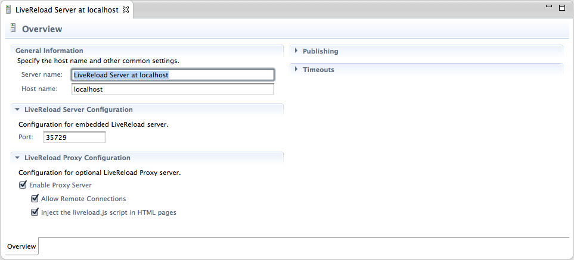

< JST/JSF/HTML Toools Visual Page Editor >
General |
|
| Server Mode Support |
In Addition with the Directory Mode support introduced in 1.0.0.Alpha, the new Server Mode brings LiveReload support to resources deployed on a JBoss AS Server (other types of servers will follow). In this mode, the LiveReload commands are sent to the connected browsers once resources have been redeployed on the Application Server. This means that notified browsers will retrieve wait until the latest version of the resources have been deployed to load them. As before, users only need to create and start the LiveReload server, connect their browser using the installed extension and then start working on resources in their workspace. Related JIRA: JBIDE-13950 |
| Directory Mode Support via Proxy |
The LiveReload server now features an optional embedded proxy mode which enhances the Directory Mode experience. Using this proxy, users can not only access their local files from remote devices, but also have the <script> tag to load the livereload.js script automatically added at the bottom of the <body> element of the returned HTML pages. This means that LiveReload support is now available for tablets and smartphones on that would not allow for browser extension installation ! For security reasons, the proxy is disabled by default. Once enabled, it may optionaly accept remote connections if you want to enable LiveReload from remote devices or remote computers. For users wanting to use the BrowserSim with LiveReload, there is no need to allow for remote connections. In any case, only workspace projects files are exposed by this Proxy. Related JIRAs: JBIDE-13970, JBIDE-14498 |